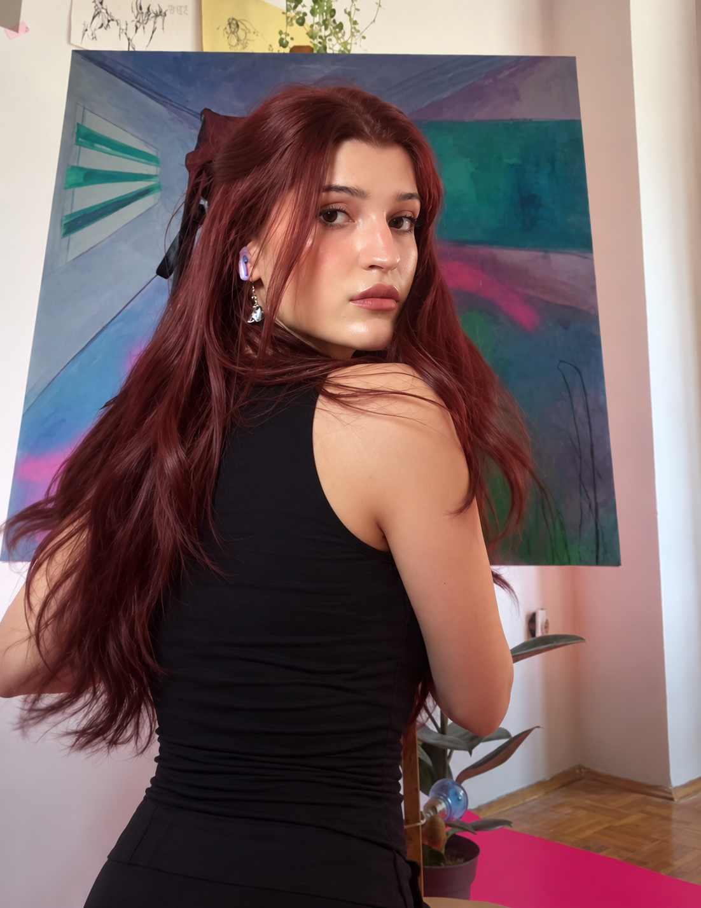

Things I make
I like to keep my eye fresh by painting, animating, and playing around with both digital and traditional media.
I like creating strange little guys in foggy liminal spaces, medieval imagery, gothic architecture and moody atmospheres.




Thanks for stopping by.
If you’d like to talk about a project or collaborate, I’d love to hear from you.
Back to top ↑